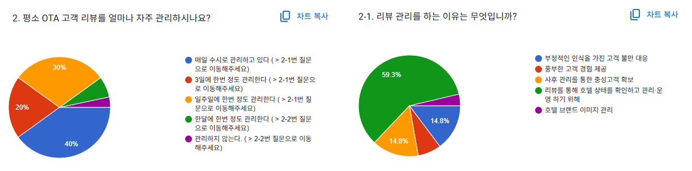
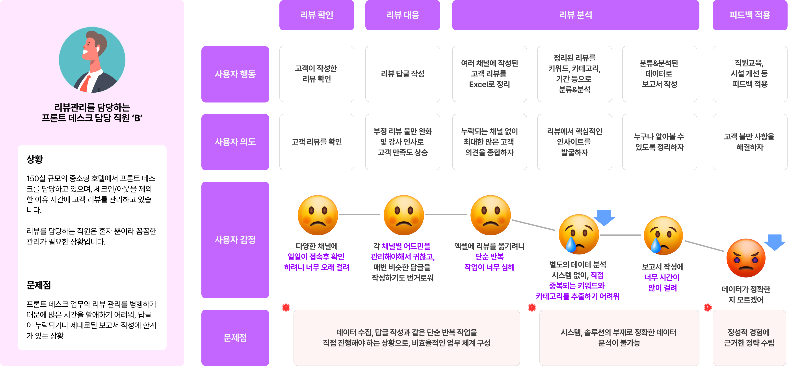

Overview
리뷰 자동응답 서비스 ‘리비(Revie)’는 숙박시설 전용 리뷰 관리&분석 솔수션으로, 다양한 OTA(야놀자, 여기어때, 부킹닷컴 등)에 등록된 리뷰를크롤링하고, AI 기반으로 분석하여, 자동으로 맞춤 응답을 생성하는 SaaS형 솔루션입니다.
단순히 리뷰에 답글을 다는 것을 넘어, 긍정/부정 감정 분석 및 리뷰 키워드 추출, 응답률 리포트 등
호텔 등 숙박시설의 고객 경험 관리를 자동화하는 기능을 포함하고 있습니다.
2022년 내부 R&D 프로젝트로 시작하여, 2023년 SaaS 형태로 상용화되었으며,
2025년 현재까지 다수의 브랜드 호텔 및 중소형 호텔에 서비스를 제공 중입니다.
해당 프로젝트에서 총괄 PM이자 기획자로써 리비의 서비스 전략 수립, 기능 정의, UX 설계 및 정책 기획을 주도하였습니다.
Ⅱ. 기획 의도
서비스의 시작
숙박시설 리뷰 관리&분석 서비스 '리비'는 '데이터메니티'서비스가 안정기에 접어드는 시점에서
추가 수익을 얻을 수 있는 새로운 비즈니스를 위해 시작되었습니다.
데이터메니티 서비스에서는 가격 비교&관리 기능 뿐 아니라 다양한 OTA(Online Travel Agency)의 리뷰를 한 곳에서 확인 가능한
'리뷰 종합 확인'기능을 MVP레벨로 서비스 중 이었는데요.
최소 기능으로 제공되는 서비스임에도 사용자의 95%이상이 리뷰 확인 서비스를 이용하고 있음을 알 수 있었으며,
고객 설문 결과 리뷰를 좀 더 편하게 관리할 수 있는 솔루션에 대한 니즈가 높음을 확인할 수 있었습니다.
또한 당시 서비스 안정성과 과금 구조 개선의 일환으로 진행하고 있던 MSA구조 적용과 클라우드 서비스(SaaS)전환과 함께
추가 비즈니스 구조를 만들 수 있다고 생각하여 진행하게 되었습니다.
문제점 발견
먼저 고객 설문을 통해 서비스 니즈를 파악할 수 있었습니다. 설문 결과, 리뷰를 주 1회 이상 확인 및 관리하는 비율은
전체 90%로, 그 중 50%는 매일 1회 이상 리뷰를 관리하고 있다고 응답하였습니다.
또한 리뷰관리의 목적은 사후관리, 고객 만족도 증진의 목적이 각 15%수준으로 조사되었지만, 리뷰에 작성된 부정적 후기 등을 통해
호텔의 컨디션을 점검하기 위함이 59.3%로 가장 높게 조사되어, 단순 답글 작성보다는 리뷰 분석에 의미가 있음을 알 수 있었습니다.

하지만 이후 항목을 통해 문제점을 확인할 수 있었는데요, 이전 데이터메니티와 마찬가지로 리뷰 관리 역시
담당인력의 부재, 시간 부족, 다수의 채널을 모두 관리할 여력의 부족의 이유로 확인되었습니다.
실제로 '리뷰관리에 대한 필요성을 느끼지 못해서'라는 항목은 단 한개의 시설도 그렇다고 응답하지 않아,
리뷰관리의 필요성을 다시한번 확인할 수 있었습니다.
우리는 발견된 문제를 해결하고 새로운 비즈니스 모델을 만들기 위하여 고객 페르소나를 정리했습니다.
Ⅲ. 고객 페르소나
우리는 데이터메니티 서비스와 마찬가지로 ①인력난이 존재하며, ②자체 솔루션 구축도 불가능한 50~200객실 규모의 중소형 호텔을 1순위 타겟으로 설정하였으며, 실제 해당 규모의 호텔의 데이터메니티 및 타 솔루션 이용 현황을 조사 및 정리하였습니다.
1️⃣데이터 수집 및 분석의 한계
기존 자동화 되어있지 못한 '가격관리' 영역을 '데이터메니티'서비스로 자동화하였으나, 여전히 많은 영역이
아날로그 방식에 머물러 있으며, 디지털 전환이 필요하다는 것을 확인할 수 있었습니다.

특히, 단순 후기관리가 아닌 메시징, Up&Cross Selling, Chatbot 등 '고객관리(CRM)'차원에서의 솔루션이 부재함을 확인하였고,
이러한 고객 여정을 대응하는 '호텔 관리 여정' 내 부재한 솔루션을 데이터메니티 서비스와 연계하여 제공한다면
새로운 비즈니스 창출 뿐 아니라 진정한 '숙박시설의 디지털 전환'에 다가갈 수 있을 것으로 예상하였습니다.
리뷰 관리&분석 데이터를 기초로 시작하는
기존 자동화 되어있지 못한 '가격관리' 영역을 '데이터메니티'서비스로 자동화하였으나, 여전히 많은 영역이
아날로그 방식에 머물러 있으며, 디지털 전환이 필요하다는 것을 확인할 수 있었습니다.
Ⅳ. 문제 정의&해결책
파악된 문제 정리
우리는 페르소나 및 고객 여정 정리를 통해 구체적인 문제점을 도출하고 해결 방안을 정리할 수 있었습니다.
구체적으로 정의된 문제점과 해결책은 다음과 같습니다.

구체적인 솔루션 방향 정의
다음으로는 이 솔루션을 어떤 방향으로 기획해 나가야 하는지 좀 더 구체적인 요구사항을 파악하였습니다.
- 축제·행사 등 수요 관련 데이터 및 주변 경쟁 시설 가격 데이터 수집 시스템
워크 인(Walk-in)고객이나 전화를 통해 숙박 예약이 이루어지던 과거와 달리 야놀자, 여기어때, 부킹닷컴 등의
호텔(숙박시설)은 ①내부 판매량 ②축제, 행사 등 수요에 대한 외부 변수, ③주변 경쟁시설의 가격변동
3개의 주요 변수에 의해 가격이 변동되며, 이를 실시간으로 반영해야 효율적인 세일즈가 가능,
내부 판매량은 이미 대부분 호텔에서 사용 중인 전산 시스템(PMS)를 통해 간편하게 확인이 가능하나,
축제·행사 등 외부 변수나 주변 경쟁 시설 가격 정보의 경우, 인터넷에서 직접 수집해야 하는 정보로,
많은 시간과 인력 투입이 불가피 - 판매량, 시장 수요, 경쟁 시설 가격을 종합한 가격 추천 시스템
수집된 데이터를 분석하여 최적의 가격을 도출해 내야 하지만, 데이터 분석 경험이 적은 호텔의 경우,
정량적인 데이터 분석이 불가능하여, 관리자(지배인)의 개인적 경험에 의존할 수 밖에 없음
다음으로는 구체적인 설계를 위하여 유사 서비스 및 시장을 조사하였습니다.
Ⅴ. 마켓 분석
시장 분석
시장 조사 결과 2020년부터 24년까지 글로벌 OTA시장은 13.6%성장 하였으며, 지속적인 성장이 예상되었습니다.
그 결과 전 세계적으로 OTA의 적정 가격을 설정하여 수익을 극대화 하는
'수익관리 시스템(Revenue Management System, RMS)' 시장 또한 급속도로 성장하고 있음을 확인하였습니다.
Market Size 조사 결과, 국내에는 약 2,000개의 호텔을 포함한 55,000개의 숙박시설이 존재하고 있으며, 시설 규모로 계산한
결과
약 3,000억에서 최대 8천억원 규모의 시장으로 추정되며, 아시아 시장은 2~3조원, 글로벌 시장은 14조에서 42조 규모로 계산되었습니다.

경쟁사 분석
시장 내 경쟁사에 대해 확인한 결과, 국내 시장에 비해 상대적으로 관광&숙박 산업이 발전한 유럽과 미국을 중심으로
다양한 솔루션이 존재함을 확인할 수 있었습니다.
특히 미국 중심으로 서비스를 제공하는 'Rategain', 'IDEAS', 유럽을 중심으로 서비스를 제공하는 'OTAinsight'의 경우
IPO및 1천억 이상의 투자유치 경험을 보유한 유니콘 기업으로 성장해 있음을 확인할 수 있었습니다.
다만 현재까지 아시아 시장에 적극적으로 진출한 기업은 없는 것으로 확인하였으며,
국내 호텔 확인 결과 총 2,000여개의 호텔 중 30개 미만의 호텔만이 RMS를 활용하고 있다고 파악하였습니다.

경쟁사에서 제공하는 서비스를 상세 분석한 결과 대부분의 기능과 UI요소가 중복됨을 확인할 수 있었고, 기능을 정리하였습니다.
| 항목 | Rategain | IDEAS | OTA Insight | Roomprice Genie | RMS |
|---|---|---|---|---|---|
| 경쟁사 가격수집 | ● | ● | ● | ● | ● |
| 축제 행사 데이터 제공 | X | X | ● | X | ● |
| AI 가격 설정 | ● | ● | X | ● | X |
경쟁사 서비스 분석 결과 3개 핵심 기능을 모두 제공하고 있는 솔루션은 아직 존재하지 않음을 확인할 수 있었으며,
3가지 핵심 기능을 구현함과 동시에 국내 현황에 맞는 현지화 전략을 통해 차별화 할 수 있을 것으로 기대되었습니다.

특히 국내 시장의 경우 글로벌 마켓과 달리 Agoda, Booking.com, AirBnB 등 글로벌 OTA의 점유율이 상대적으로 낮아
Local OTA인 '야놀자', '여기어때' 데이터를 적극활용한다면 차별화 포인트가 있다고 판단하였습니다.
Ⅵ. IA 및 와이어프레임 설계
IA 설계
IA 설계 과정에서 가장 중점을 둔 포인트는 '사용자 중심의 기능 구성'입니다.
RMS 시스템은 복잡한 데이터를 다루는 서비스이기에, 정보가 어떻게 배치되고 연결되는지에 따라
사용자의 이해도와 행동 유도에 큰 차이를 만들 수 있습니다.
데이터메니티는 '데이터 수집 → 분석 → 가격 적용'이라는 흐름을 갖고 있는 서비스로,
이러한 업무 프로세스가 UI 흐름에도 그대로 반영되어야 했습니다. IA 설계 시 다음 세 가지 원칙을 기반으로 구조를 구성했습니다
Wireframe 설계
와이어프레임 단계에서는 서비스 이용 흐름과 구체적인 사용방법 가이드 작성에 집중하였습니다.
특히 RMS는 다양한 데이터를 동시에 보여줘야 하는 서비스로 정보의 계층화와 시각적 우선순위를 구체적으로 작성하였고,
숙박산업에 도메인 지식이 없는 개발자와 협업하기 위하여 기능과 관련된 배경설명과 기능의 의미를 설명하고자 노력하였습니다.
또한 팀원 중 디자이너가 없었던 초기였기 때문에, 전반적은 UI 구성과 컬러 등 디자인적 요소도 고려하여 제작하였습니다.
초기 데이터메니티 와이프레임 일부자료
Ⅶ. 핵심 기능
1️⃣ 경쟁사 가격 수집 및 수집데이터 제공(시각화)
먼저, 경쟁사 가격을 수집하고 채널별로 경쟁사와 최저가를 쉽게 비교할 수 있도록 시각화하는 기능을 구현하였습니다.
고객 호텔과 고객 호텔이 지정한 경쟁사 데이터를 시간단위로 수집하여 데이터를 제공하였고, 국내 시장 특성을 반영하여
'야놀자', '여기어때' 등 로컬 채널을 포함하였습니다.
UI구성은 기존 글로벌 서비스가 제공하는 '월간 View'방식의 UI가 아닌 '일간 View'방식의 UI를 Default로
제공하였는데,
상대적으로 Leadtime(*투숙객이 호텔을 예약하고 실제 이용하기까지의 term)이 짧은 국내 중소형시설 특성 상
월단위 가격보다는 일간-주간 데이터를 상세하게 보는 기능이 필요했기 때문입니다.
물론 데이터메니티 서비스에서도 월간 View를 제공하여 편의성을 높였습니다.

이 밖에도 경쟁사 가격을 쉽게 제공하기위해 다음과같은 기능을 추가로 구현하여 제공하였습니다.
- 🔍 경쟁사 지정 : 고객사가 원하는 경쟁사를 자유롭게 검색하여 추가할 수 있는 기능
- 🔍 수집 채널 지정 : 고객사가 원하는 채널을 자유롭게 추가하여 확인할 수 있는 기능
- 🔍 룸 타입 구분 : 유사 등급의 객실간 비교를 할 수 있도록 룸타입을 분류하여 제공하는 기능
2️⃣ 행사·축제 데이터 수집
호텔 가격에 영향을 미치는 행사나 축제는 그 규모도 중요하지만 개최지와의 거리 등의 다양한 변수가 존재합니다.
데이터메니티 서비스에서는 사용자가 위치한 지역내에서 개최되는 축제정보를 관광공사에서 제공하는 API를 활용하여 제공하였으며,
컨벤션 센터 데이터를 추가로 수집하여 다양한 학회, 컨벤션 등의 정보를 고객사 호텔이 위치한 반경 20km내 데이터를 제공하였습니다.
수집된 정보는 월간 view 페이지와 메인 페이지에서 확인할 수 있도록 제공하였습니다.
이 밖에도 시장 수요를 예측할 수 있는 다양한 데이터를 제공하였습니다.
- 🔍 날씨 정보 : 고객사가 위치한 지역의 기상 정보를 제공
- 🔍 판매량 예측 : OTA 판매량 예측 데이터
3️⃣ AI 가격 설정 기능
마지막 핵심 기능인 AI 가격 설정은 수집된 데이터를 기반으로최적의 가격을 도출하는 작업이 선행되어야 했습니다.
팀 내 개발자, 데이터 분석가와 함께 예측모델(MAPE)을 결정하고, 모델에 사용할 수 있는
'판매량', '판매 가격', '경쟁시설 가격', '날씨', '시설정보', '공휴일 등 날짜 정보', '객실 상세정보'등 데이터를 특정하고,
판매 가격 설정 모델에 학습한 결과 정확도 98.12%에 도달하였습니다.
이후 도출된 적정 가격을 쉽게 사용자가 적용할 수 있도록 기간별, 시간별로 자동 가격 설정을 가능하도록 구현하였으며,
객실 타입별로도 가격을 결정할 수 있도록 '그룹'기능을 구현하였습니다.
Ⅷ. 서비스 강점&차별점
현지화 전략을 통한 국내 시장 점유율 확보
앞서의 글로벌 RMS는 ‘아고다’, ‘부킹닷컴’ 등 Global OTA 중심으로 서비스를 제공중인 상황에서
국내 및 아시아 시장의 ‘야놀자’, ‘여기어때', ‘라쿠텐’ 등 Local OTA데이터를 추가함으로써,
Local OTA의 점유율이 큰 국내, 일본시장에서 경쟁 우위를 확보 할 수 있었습니다.
또한 글로벌 이벤트만 제공하는 글로벌 서비스와의 차별점을 위하여 기상,
행사&축제 정보 역시 로컬 데이터를 수집 및 제공하여 차별화 했습니다.